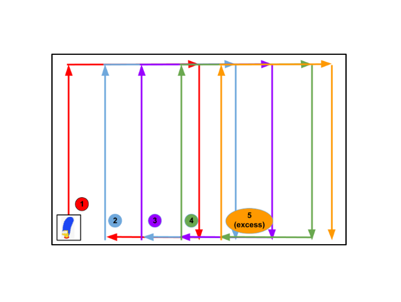

Project MARGE
Autonomous Desk Cleaning Robot

Project Overview
Project MARGE was developed as part of the First-Year Mechatronics Engineering Cornerstone Project. The robot was designed to autonomously clean desk and ground surfaces using integrated mopping and air-blowing mechanisms.
Despite being constrained to unreliable, low-cost sensors provided for the project, MARGE demonstrated robust autonomous behavior and repeatability, achieving less than 10% operational error. The project was one of the few to receive a perfect score during demo day evaluations.
System Architecture
- LEGO EV3 intelligent brick as the primary controller
- LEGO EV3 motors and sensors
- Color sensors for desk-edge detection and guidance
- Mopping and air-blowing cleaning mechanisms
- Tetrix aluminum extrusions and couplings for mechanical structure
- Embedded control implemented using RobotC
Autonomous Operation Pipeline
1. Mapping Mode
After being placed in one of the four corners of a desk, MARGE enters a mapping sequence where it follows the desk perimeter using color sensor-based edge detection. Encoder values are recorded to estimate desk dimensions.
A robust guidance strategy ensured MARGE maintained alignment with the desk edges throughout the mapping process.
2. Offsetting & Coverage Planning
Using the mapped dimensions, MARGE calculates an optimal cleaning trajectory by subdividing the desk into a series of equally spaced rectangular passes. During this stage, the mopping mechanism is deployed and activated.
3. Localization & Homing
After completing the primary cleaning passes, MARGE enters a remainder stage to address any unvisited regions. The robot then determines its location relative to the start of the mission and autonomously returns to its deployment position.
Key Technical Contributions
- Designed a robust autonomous cleaning algorithm using limited sensor inputs
- Implemented encoder-based distance tracking for mapping and localization
- Developed a state-machine-based control architecture in RobotC
- Integrated LEGO EV3 and Tetrix mechanical subsystems
- Achieved reliable autonomy despite sensor noise and uncertainty
Results & Performance
- Less than 10% operational error across multiple test runs
- Consistent full desk coverage
- Perfect score achieved on demo day
- Stable operation across varying surface and lighting conditions
Skills Demonstrated
- Autonomous robotics system design
- Embedded programming (RobotC)
- Sensor-based navigation and fault tolerance
- Motion planning and coverage algorithms
- Mechatronic system integration
- Team-based engineering design
Reflection
Project MARGE provided early exposure to real-world robotics challenges such as unreliable sensing, imperfect actuation, and the importance of robust autonomous control logic. The lessons learned in this project directly informed later work on more advanced robotic systems and autonomous platforms.